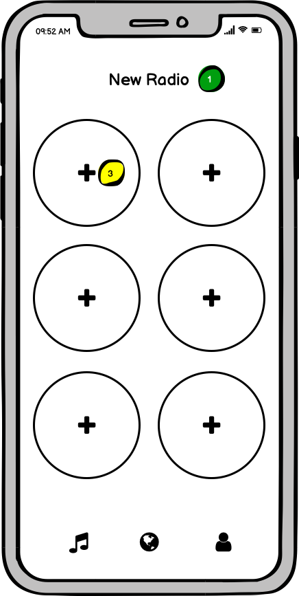
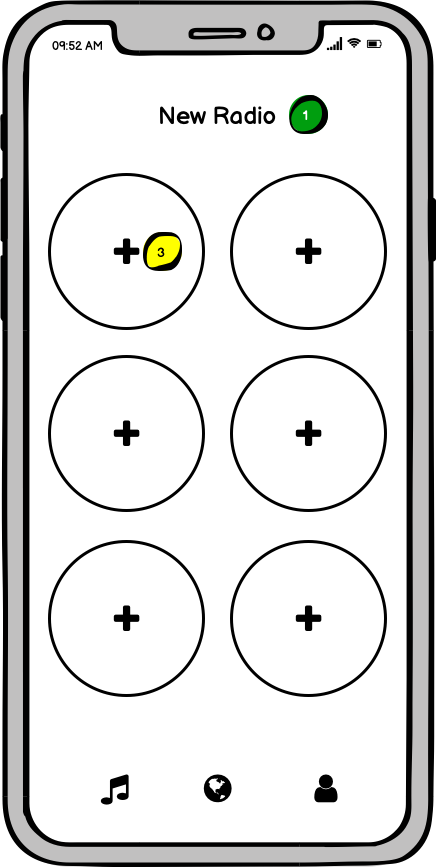

Review 1
Review 2
Review 3
Review 4
Scenario
Imagine you are a music listener and want to discover more songs
similar to your taste. This app allows you to explore and discover
new music with a tinder-style swiping action. This is not an
actual app but an interactive mockup made on prototyping software.
Testing Instructions
-
Select a radio in the Discover page and swipe through songs. The
only radio that is currently interactable is the K-pop radio.
- Create a new radio and add a minimum of two songs.
- View the first playlist on the Library page.
- View your profile and view the edit profile page.
Post-Test Questions
- How intuitive was the "Library" page?
- How intuitive was the "Discover" page?
- How intuitive was the "Profile" page?
-
Please share any overall thoughts or improvements you would like
to see on this app. Any and all thoughts are welcome!
Testing Summary
- Testers able to use the swipping action after some trial and error
- Testers challenged by the "Create Radio" task, unclear where the button to
create radio is located. Need to clarify this task to make it less challenging.
- Testers knew to add two songs to the first two highlighted discs on screen.
- One tester noted being able to see more songs in the Recommended & Recently Listened sections on the Profile page.
- Testers noticed similarity to Tinder
- Overall gave 4.5 average intutive scores for Library, Discover, and Profile page.
- Clear to use buttons, not information overload for the user
Potential Changes
-
Standardize the terminology for creating a Radio on our Discover
Page
-
Make the swipping action more seamless as user was unsure how to
swipe at first
-
Have the ability to edit and change the Recommendations and
Recently Listened on the Profile Page
- Consider adding a thumbs up button similar to Pandora.
- Allow users to add three mandatory songs, not only two songs.
- Add the word "My" to Library page (ie. "My Library")


 
